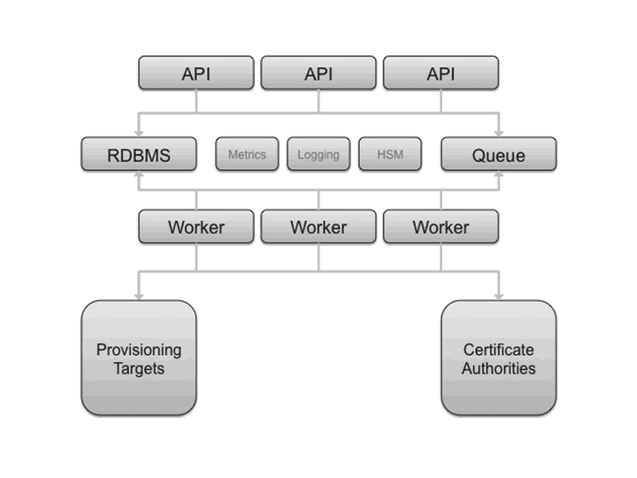
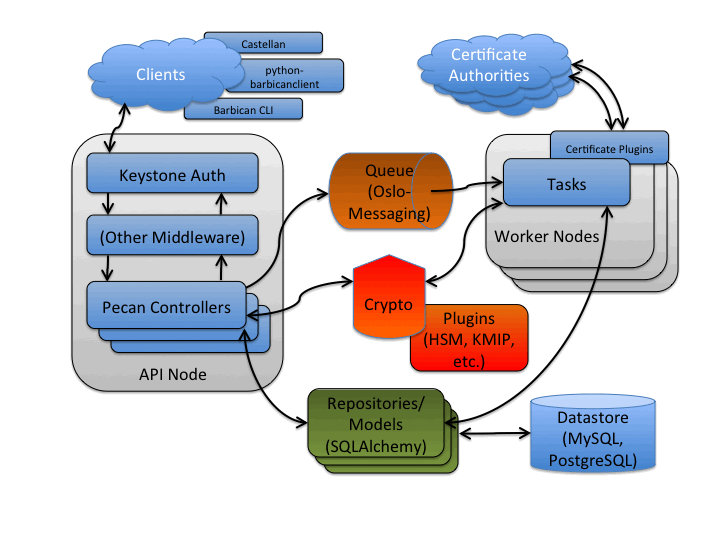

Architecture¶
This document describes the architecture and technology selections for Barbican. In general, a goal is to utilize the OpenStack architecture and technology selections as much as possible. An overall architecture is presented first, followed by technology selection details to implement the system.
Overall Architecture¶
The next figure presents an overall logical diagram for Barbican.
The API node(s) handle incoming REST requests to Barbican. These nodes can interact with the database directly if the request can be completed synchronously (such as for GET requests), otherwise the queue supports asynchronous processing by worker nodes. The latter could include interactions with third parties such as certificate authorities. As implied in the diagram, the architecture supports multiple API and worker nodes being added/removed to/from the network, to support advanced features such as auto scaling. Eventually, the database could be replicated across data centers supporting region-agnostic storage and retrieval of secured information, albeit with lags possible during data synchronization.
Technology Selection¶
In general, components from the Oslo commons project are used within Barbican, such as config, messaging and logging.
The next figure examines the components within Barbican.
Several potential clients of the Barbican REST interface are noted, including Castellan which presents a generic key management interface for other OpenStack projects with Barbican as an available plugin.
The API node noted in the previous section is a WSGI server. Similar to OpenStack projects such as Glance it utilizes paste to support configurable middleware such as to interface with Keystone for authentication and authorization services. Pecan (a lean Python web framework inspired by CherryPy, TurboGears, and Pylons) is utilized to map resources to REST routes. These resources contain the controller business logic for Barbican and can interface with encryption/decryption processes (via crypto components), datastore (via repository components) and asynchronous tasks (via queue components).
The crypto components provide a means to encrypt and decrypt information that accommodates a variety of encryption mechanisms and cryptographic backends (such as key management interoperability protocol (KMIP) or hardware security module (HSM)) via a plugin interface.
The repository components provide an interface and database session context for the datastore, with model components representing entities such as Secrets (used to store encrypted information such as data encryption keys). SQLAlchemy is used as the object relational model (ORM) layer to the database, including MySQL and PostgreSQL.
For asynchronous processing, Oslo Messaging is used to interact with the queue, including RabbitMQ. The worker node processes tasks from the queue. Task components are similar to API resources in that they implement business logic and also interface with the datastore and follow on asynchronous tasks as needed. These asynchronous tasks can interface with external systems, such as certificate authorities for SSL/TLS certificate processing.